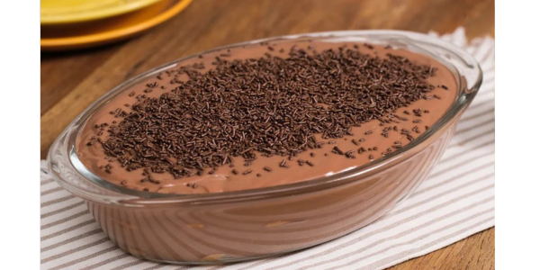

RECEITA - PAVÊ DE CHOCOLATE
INGREDIENTES
- 1 lata de leite condensado
- 1 lata de creme de leite
- 200 gramas de chocolate meio amargo
- 200 gramas de chocolate ao leite
- 1 pacote de biscoito champanhe
- Licor de chocolate a gosto
- Chocolate granulado para decorar
MODO DE PREPARO
- Em uma panela, derreta os chocolates com o leite, mexendo sempre até obter um creme homogêneo. Adicione o creme de leite e misture bem.
- Em uma travessa, intercale camadas de biscoito champanhe embebido no licor de chocolate e camadas de creme de chocolate.
- Repita as camadas até finalizar os ingredientes, terminando com o creme de chocolate.
- Leve à geladeira por algumas horas, até firmar.
- Antes de servir, decore com chocolate granulado.
Voltar